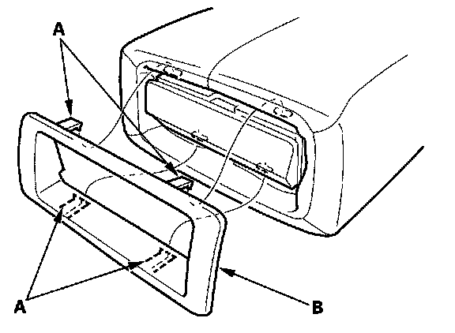
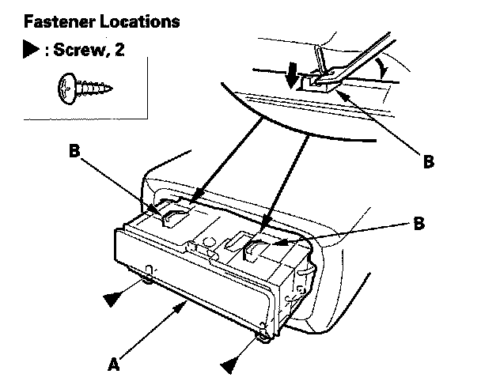

Drink Holders: Service and Repair
Second Row Seat Armrest Beverage Holder ReplacementSpecial Tools Required
KTC trim tool set SOJATP2014 *
* Available through the American Honda Tool and Equipment Program
NOTE:
- Take care not to tear the seams or damage the seat covers.
- Use the appropriate tool from the KTC trim tool set to avoid damage when prying components.

1. Detach the hooks (A), then remove the beverage holder cover (B).

2. Remove the screws, then pull out on the beverage holder (A) to release the hooks (B).
3. Install the beverage holder in the reverse order of removal.